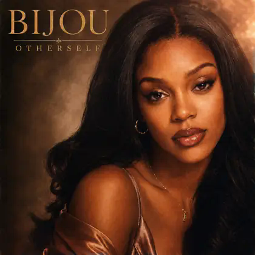

Out now · The current chapter
OTHERSELF
Warm, intimate and reflective. A chapter about transformation, and the selves we discover along the way.
Apple Music opens Bijou’s artist page. Spotify and YouTube Music open search results for Bijou Nicole.
Go deeper into the era
Meet your other self.
Collect the pieces of the era in Mirror Run.
Play Mirror Run